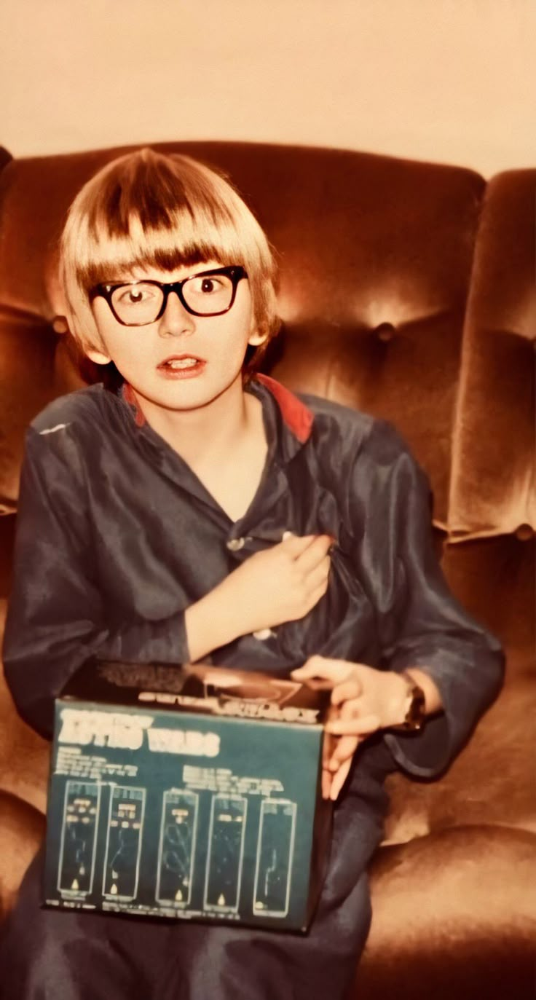
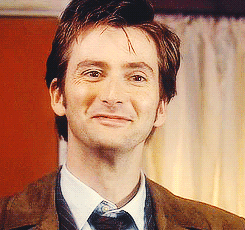
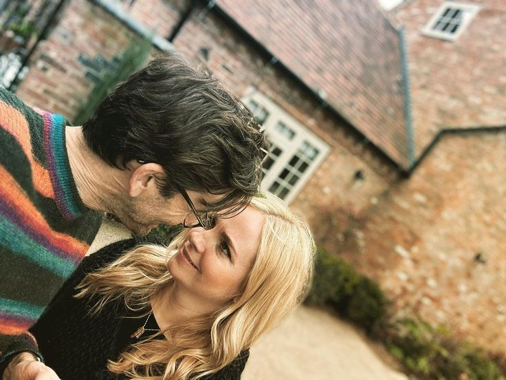

David Tennant (born David John McDonald on April 18, 1971, in Bathgate, Scotland) is one of the most versatile and genuinely beloved actors of his generation.
Growing up in Ralston, Renfrewshire, he fell in love with acting at a very young age inspired by the very stories that would later mark his career. Driven by that early passion, he trained at the prestigious Royal Scottish Academy of Music and Drama,
quickly building a reputation for his magnetic stage presence and fierce commitment with the Royal Shakespeare Company.

After making an impression in standout British television projects like Casanova (2005) and bringing the unhinged Barty Crouch Jr
to life in Harry Potter and the Goblet of Fire, his career reached a whole new orbit. In 2005, he stepped into the TARDIS as the Tenth Doctor in Doctor Who.
His run was nothing short of a cultural phenomenon, by blending high energy, quick witted charm, and heartbreaking vulnerability,
he defined an entire era of the show and captured the hearts of fans all around the globe.

Off-screen, David’s life is just as full. In 2011, he married actress and producer Georgia Moffet,
who he met in 2008 while filming the iconic Doctor Who episode "The Doctor's Daughter".
Together, they share a vibrant family life with their five children, Ty, Olive, Wilfred, Doris, and Birdie.